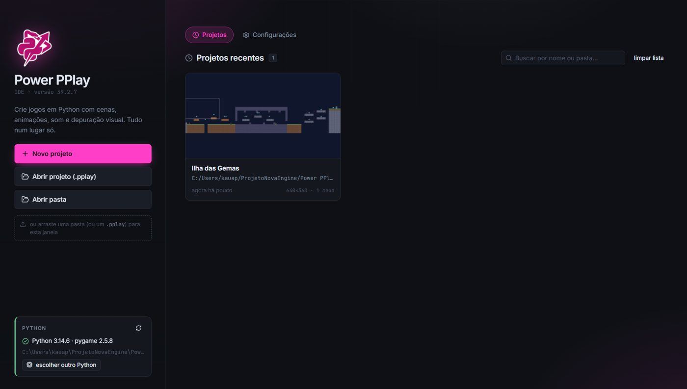
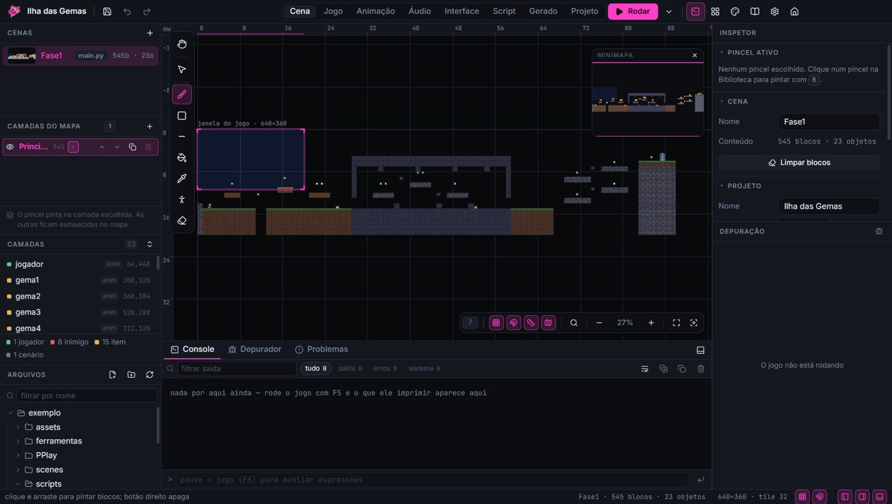
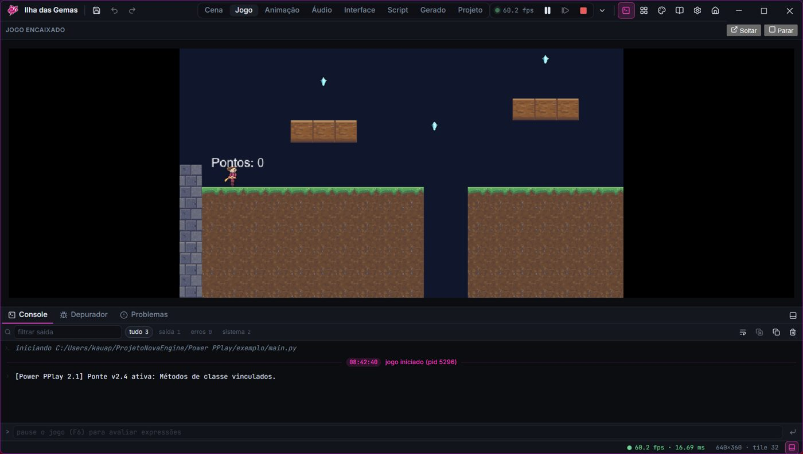
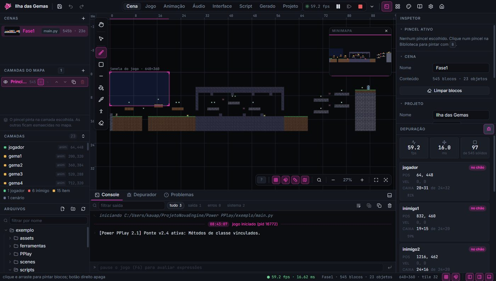
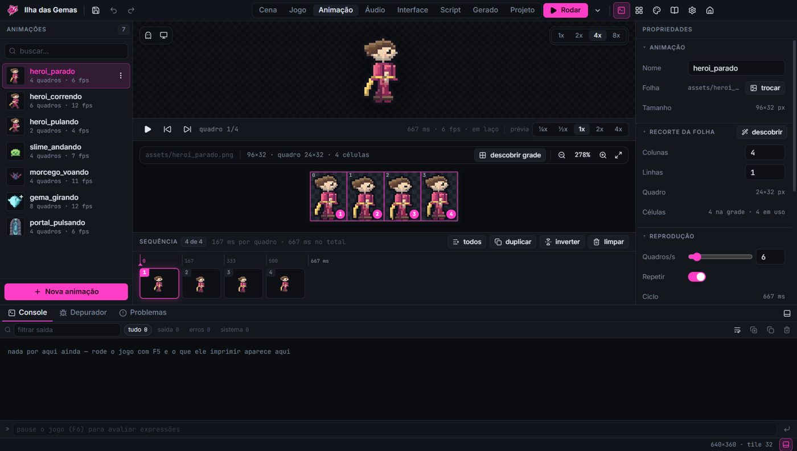
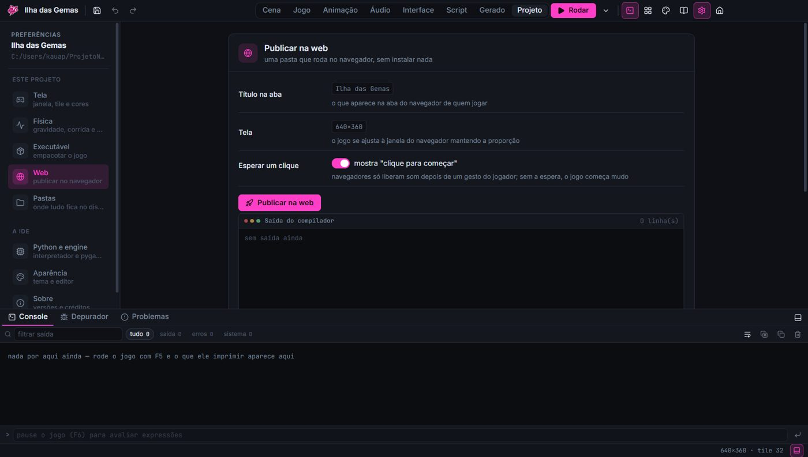

AboutSobre
PPlay is the Python game library of the Game Programming Lab at the Institute of Computing of UFF (Universidade Federal Fluminense). It was born at UFF Medialab to teach programming through games, and it is the framework students use in the Game Development Lab course: the first game fits in under 20 lines.
A PPlay é a biblioteca de jogos em Python do Laboratório de Programação de Jogos do Instituto de Computação da UFF. Ela nasceu no Medialab da UFF para ensinar programação por meio de jogos e é a framework que os alunos usam na disciplina de Laboratório de Desenvolvimento de Jogos: o primeiro jogo cabe em menos de 20 linhas.
Power PPlay is my rewrite of it. Version 2.0 keeps the same simple way of writing games that students already know, but puts a modern engine underneath, built on Pygame-CE: resource caching, sub-pixel physics, a virtual resolution buffer, scenes, cameras, lighting, particles and pathfinding. Games written for the original PPlay 1.0 still run, through a retro-compatibility bridge that switches them to the new engine automatically.
A Power PPlay é a minha reescrita dela. A versão 2.0 mantém o mesmo jeito simples de escrever jogos que os alunos já conhecem, mas coloca um motor moderno por baixo, sobre o Pygame-CE: cache de recursos, física em sub-pixel, buffer de resolução virtual, cenas, câmera, iluminação, partículas e busca de caminho. Jogos feitos para a PPlay 1.0 original continuam rodando, por uma ponte de retrocompatibilidade que os passa para o motor novo automaticamente.
Version 2.1 builds on that base with new modules (interface, pseudo-3D, procedural generation) and a development environment of its own. Power PPlay is now the version presented on the official PPlay site.
A versão 2.1 parte dessa base com módulos novos (interface, pseudo-3D, geração procedural) e um ambiente de desenvolvimento próprio. A Power PPlay é hoje a versão apresentada no site oficial da PPlay.
Source on GitHubCódigo no GitHub → Official PPlay siteSite oficial da PPlay →The four pillars of 2.0Os quatro pilares da 2.0
Raw performancePerformance bruta
Resource caching (one image in memory for a thousand zombies, Flyweight style) and viewport culling, so only what is on screen gets drawn.
Cache de recursos (uma imagem na memória para mil zumbis, no padrão Flyweight) e culling de viewport, que só desenha o que está na tela.
Cinematic physicsFísica cinematográfica
A sub-pixel kinematic engine that solves one axis at a time: no corner snapping, no walking through walls, with coyote time and jump buffering built in.
Um motor cinemático em sub-pixel que resolve um eixo de cada vez: sem engate de quina, sem atravessar parede, com coyote time e jump buffering de fábrica.
Resolution independenceIndependência de resolução
Games draw into a virtual canvas that is scaled to any monitor with letterboxing. pixel_art=True keeps pixel art crisp; F11 toggles fullscreen.
O jogo desenha num canvas virtual que é escalado para qualquer monitor, com letterbox. pixel_art=True mantém a pixel art nítida; F11 alterna a tela cheia.
Abstraction and modularityAbstração e modularidade
ObjectGroup for collections, SceneManager for screens, and the Architect tool, which moves code out of a giant main.py into its own files.
ObjectGroup para coleções, SceneManager para telas e a ferramenta Architect, que tira código de um main.py gigante e leva para arquivos próprios.
What else is in the boxO que mais vem na caixa
Camera and parallaxCâmera e parallax
A camera that follows with smoothing and world bounds, and infinite parallax layers.
Câmera que segue com suavização e limites do mundo, e camadas de parallax infinitas.
Dynamic lightingIluminação dinâmica
A darkness layer with real-time lights, for lanterns and fog of war.
Uma camada de escuridão com luzes em tempo real, para lanternas e névoa de guerra.
Juice
Screen shake, flashes, fades and particle emitters for game feel.
Tremor de tela, flashes, fades e emissores de partículas para dar sensação de jogo.
Tweens, A* and raycastsTweens, A* e raycasts
Easing animations, grid pathfinding and line-of-sight checks: CS algorithms applied to enemies.
Animações com easing, busca de caminho em grade e linha de visão: algoritmos de computação aplicados a inimigos.
Worlds from text filesMundos em arquivo de texto
TileMap turns a .txt grid into a level with solid tiles and automatic culling.
O TileMap transforma uma grade em .txt numa fase com blocos sólidos e culling automático.
Input as actionsEntrada como ações
InputManager maps names like "jump" to several keys, so game logic never talks to the hardware.
O InputManager liga nomes como "pulo" a várias teclas, e a lógica do jogo nunca fala com o hardware.
A taste of the APIUm gostinho da API
Straight from the 2.0 manual. No need to start Pygame by hand: the Window runs the engine's life cycle.
Direto do manual da 2.0. Não precisa iniciar o Pygame à mão: a Window cuida do ciclo de vida do motor.
from PPlay.window import Window
from PPlay.sprite import Sprite
janela = Window(800, 600, "Início Rápido")
player = Sprite("hero.png")
player.set_position(400, 300)
while True:
janela.set_background_color("darkblue")
player.draw()
janela.update()from PPlay.tilemap import TileMap
meu_mapeamento = {
'#': 'parede_pedra.png',
'X': 'plataforma_madeira.png',
'.': 'fundo_caverna.png',
'solido': ['#', 'X']
}
mapa = TileMap(tamanho_tile=32)
mapa.carregar_mapa("fase1.txt", meu_mapeamento)
solidos = mapa.get_solidos()New in 2.1Novidades da 2.1
ui moduleMódulo ui
Themed buttons, text inputs, sliders and panels with automatic layout and keyboard focus.
Botões, caixas de texto, sliders e painéis com tema, layout automático e foco por teclado.
raycaster
Wolfenstein-style pseudo-3D with textures, fog, minimap and sprites, from the same text maps.
Pseudo-3D no estilo Wolfenstein, com texturas, névoa, minimapa e sprites, a partir dos mesmos mapas em texto.
procedural
Caves, tunnels and dungeons generated by algorithm, with seeds for repeatable results.
Cavernas, túneis e masmorras geradas por algoritmo, com semente para resultados repetíveis.
Power PPlay IDEIDE Power PPlay
A desktop app with scene, animation and audio editors, a code editor and a debugger that stops the game on any line. It exports a Windows .exe or a web build, fully offline.
Um app de desktop com editores de cena, animação e áudio, editor de código e um depurador que para o jogo em qualquer linha. Exporta .exe para Windows ou versão web, tudo offline.
Fixes that matteredCorreções que importavam
Characters no longer get stuck in narrow corridors, and A* stopped treating the whole map as a wall.
O personagem não trava mais em corredor estreito, e o A* parou de tratar o mapa inteiro como parede.
A complete example gameUm jogo de exemplo completo
Ilha das Gemas: a platformer whose art, sound and level were all generated by code, showing every feature of the engine.
Ilha das Gemas: um plataforma com arte, som e fase gerados por código, mostrando cada recurso da engine.
The IDEA IDE






CreditsCréditos
- Kauã Neves (Neferoo on itch.iono itch.io / Kronohdev on GitHubno GitHub): Architect and developer of 2.0, creator of 2.1 and the IDEArquiteto e desenvolvedor da 2.0, criador da 2.1 e da IDE
- Prof. Esteban Clua: Professor responsible for PPlay · PPlay 1.0Professor responsável pela PPlay · PPlay 1.0
- Prof. Anselmo Montenegro: PPlay 1.0
- Gabriel Saldanha: Original PPlay teamEquipe original da PPlay
- Adônis Gasiglia: Original PPlay teamEquipe original da PPlay
- Yuri Nogueira: Original PPlay teamEquipe original da PPlay
- Sergio Herman: PPlay 1.0 legacy · original site themeLegado da PPlay 1.0 · tema original do site